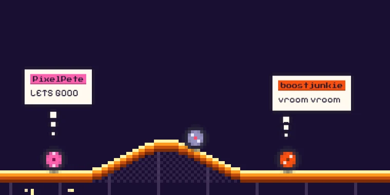
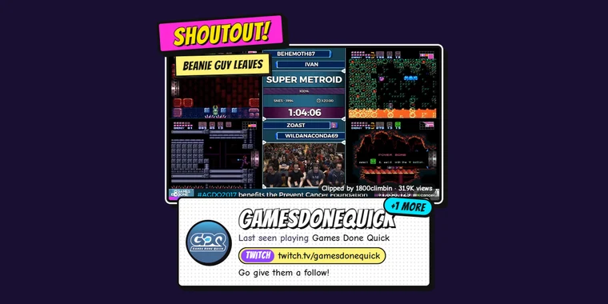
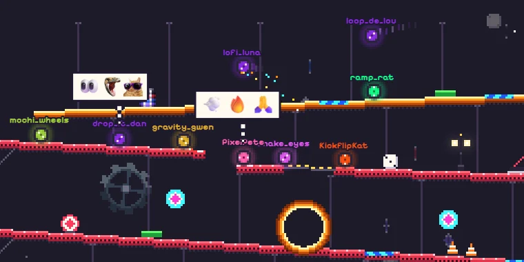
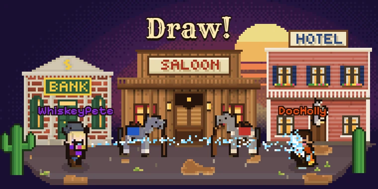
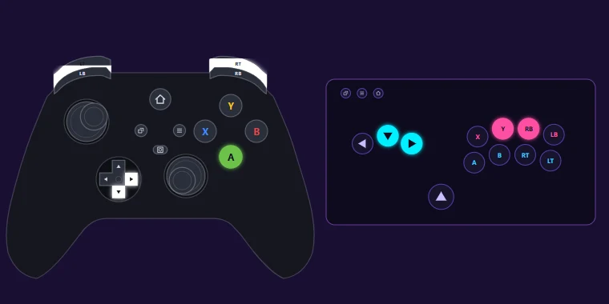
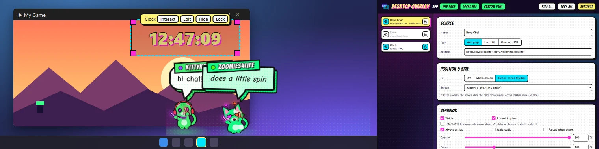

Rave Chat
Every chatter becomes a glowstick-waving dancer that bops to the beat and says their message in a comic speech bubble.
- Cats, dogs & bees
- Pumpkins & snowmen
- Speech bubbles
Free overlays & widgets for your stream. No accounts, nothing to install — paste a link into OBS and your chat starts dancing.
Every chat tool reads Twitch, Kick, YouTube and TikTok chat, with no login. Each one has a setup guide and a demo you can try right here in your browser.
Your chat, on screen: every chatter gets a character of their own.
Every chatter becomes a glowstick-waving dancer that bops to the beat and says their message in a comic speech bubble.

Chat becomes a live comic strip. Every chatter is their own big-headed fuzzy monster, and their faces change with the mood.

A pixel-art wheel races an endless pinball-and-casino stunt track. Chatters roll in on wheels of their own to say their piece.

A voxel critter lives along the bottom of your stream. It hatches, grows up with your channel and evolves into a surprise.
Things chat sets off by typing a command.

A mod types !so name and a comic shoutout card pops up, playing one of that streamer's clips, picked at random.

Chat types !join, a mod types !start, and everyone races down a pachinko machine built fresh every race.

!duel name grows a pixel-art Old West town. Two cowboys or cowgirls take five paces and draw water pistols.
New overlays, games and widgets get added here as they're built. Check back soon!
No chat needed: set them up once and drop them into a scene.

“What are we playing?” Fill the wheel with your games, give it a spin on stream and let fate decide.

Design a “stream starts in…” countdown with your own fonts, colors and effects. Everyone counts down to the same moment.

Flakes drift over your stream, pile up along the bottom and build themselves into snowmen that wave, then melt away.

Your controller on stream, every button, stick and trigger lighting up as you play. Use a preset or build your own layout.
Free, open-source downloads. Unzip and run, no installer.

A Twitch client for small ultrawide second screens. Your live follows, the stream and chat sit side by side in one short row, and the player stays close to live, so you can keep up with chat while you play.
macOS needs mpv (brew install mpv); Linux needs libmpv (for example
sudo apt install libmpv2).
Source & all releases ↗

Like an OBS browser source, but on your desktop. Float any of these tools or any web page over your game, see-through, with clicks going straight through. Comes with a pixel-font CPU, GPU and FPS panel.
Shows over games in borderless or windowed fullscreen, not exclusive fullscreen. Source & all releases ↗
1920 and Height
1080 (or your canvas size).